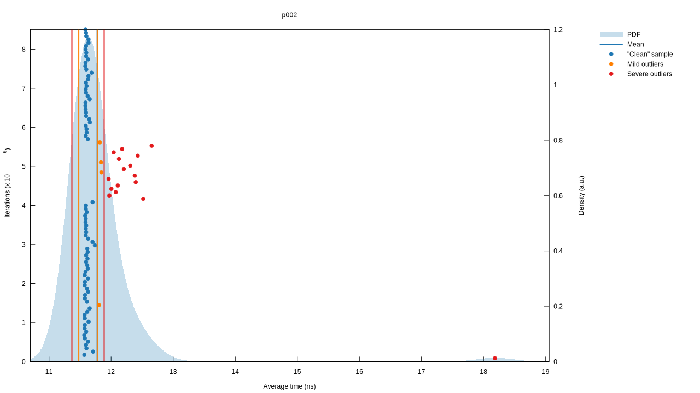

Problem 002
Each new term in the Fibonacci sequence is generated by adding the previous two terms. By starting with 1 and 2, the first 10 terms will be:
1, 2, 3, 5, 8, 13, 21, 34, 55, 89, ...
By considering the terms in the Fibonacci sequence whose values do not exceed four million, find the sum of the even-valued terms.
Let's return to the practice we established in the first problem and state our recurrence relation. We shall begin the sequence from \( 0 \) instead of \( 1 \) to ensure that our solution works for all natural numbers, though of course we're still bound by the bit widths of our integer types.
\[ \begin{align} \\ F_0 &= 0 \\ F_1 &= 1 \\ F_n &= F_{n-1} + F_{n-2} \end{align} \]
A recursive Fibonacci implementation follows from this recurrence, and from there it's simply a matter of calling this function with every natural number, filtering out values that aren't even, stopping once we've reached our limit value, and summing all the numbers we've collected.
fn main() { let result = (0..) .filter_map(|i| Some(fib(i)).filter(|n| n % 2 == 0)) .take_while(|&n| n < 4_000_000) .sum::<u32>(); println!("{}", result); } fn fib(n: u32) -> u32 { match n { 0 => 0, 1 => 1, _ => fib(n - 1) + fib(n - 2), } }
Our Fibonacci algorithm is \( O(2^n) \), so we shouldn't expect our runtime to be stellar. Profiling our implementation confirms this.
Lower bound: 192.39 ms
Best estimate: 192.49 ms
Upper bound: 192.60 ms
It could be worse, but there's definitely room for improvement.
Memoization
A clear understanding of why this Fibonacci algorithm is \( O(2^n) \) will illustrate where we can make improvements. Consider what our function calls would look like.
\[ \begin{align} \\ F_n &= F_{n-1} + F_{n-2}, \quad &\text{2 terms, } 2^1 \\ &= F_{n-2} + F_{n-3} + F_{n-3} + F_{n-4}, \quad &\text{4 terms, } 2^2 \\ &= F_{n-3} + F_{n-4} + F_{n-4} + F_{n-5} + F_{n-4} + F_{n-5} + F_{n-5} + F_{n-6}, \quad &\text{8 terms, } 2^3 \end{align} \]
Here, \( F_{n-3} \) is called twice on the second line, each time calling \( F_{n-4} \), itself which may result in the same value being called multiple times. Each one of these calls is a calculation to perform, and it's currently being done repeatedly on the same values.
This is the problem memoization solves. Memoization is an
optimisation technique. Whenever we calculate an intermediate value,
we cache it and enable it to be used later on. We can use a HashMap
for this purpose.
# use std::collections::HashMap;
#
fn fib(n: u32, cache: &mut HashMap<u32, u32>) -> u32 {
match cache.get(&n) {
Some(ret) => *ret,
None => {
let ret = match n {
0 => 0,
1 => 1,
_ => fib(n - 1, cache) + fib(n - 2, cache),
};
cache.insert(n, ret);
ret
}
}
}
As expected, we see a dramatic performance increase.
Lower bound: 3.6219 us
Best estimate: 3.6337 us
Upper bound: 3.6463 us
Reducing Time And Space
We've reduced the time complexity of our Fibonacci algorithm down
from \( O(2^n) \) to \( O(n) \), but only at the expense of space
complexity. Whilst before we had space taken up by stack frames during
the recursion, it's now being taken up by the HashMap in
addition. Neither of these allocations are necessary.
Consider the fact that we don't need to calculate arbitrary terms in
the sequence. We only ever need to know the next term. To know the
next term, we only ever need to know the two previous terms. We could
instead create an iterative solution, removing the memory needed for
the stack frames during recursion, and only hold the previous two
values in memory at a given time, removing the need for the HashMap.
Going even further, consider that we only need the even terms. Let's look to see if there's a pattern for when they occur.
\[ \mathbf{0}, 1, 1, \mathbf{2}, 3, 5, \mathbf{8}, 13, 21, \mathbf{34}, 55, 89, \mathbf{144} \]
It appears that every third item of the sequence is even. We can prove this with the laws of arithmetic.
\[ even + even = even \] \[ odd + odd = even \] \[ even + odd = odd \]
Given the first and second term is even and odd respectively, the third term must be odd, and given that, the fourth term must be even, and then the fifth term odd. The sequence is periodic in this respect because it is based on previous values. If this property exists at the start of the sequence, it exists for the entire sequence.
Return once again to our recurrence, and observe it can be written in terms of every third term.
\[ F_n = F_{n-1} + F_{n-2} \] \[ F_{3n} = F_{3n-1} + F_{3n-2} \]
If we could formulate the recurrence in terms of the \( n - 3 \) and \( n - 6 \), we could reduce it to only care about every third term.
\[ \begin{align} \\ F_{3n} &= \color{blue}{F_{3n-1}} + F_{3n-2} \\ &= \color{blue}{F_{3n-2} + F_{3n - 3}} + F_{3n-2} \\ &= 2 \cdot \color{purple}{F_{3n-2}} + F_{3n - 3} \\ &= 2 \left(\color{purple}{F_{3n-3} + F_{3n - 4}}\right) + F_{3n-3} \\ &= 3 \cdot F_{3n-3} + F_{3n-4} + \color{green}{F_{3n-4}} \\ &= 3 \cdot F_{3n-3} + F_{3n-4} + \color{green}{F_{3n-5} + F_{3n-6}} \\ &= 3 \cdot F_{3n-3} + F_{3n-3} + F_{3n-6} \\ &= 4 \cdot F_{3n-3} + F_{3n-6} \end{align} \]
Now, if we divide our indices by \( 3 \), we have a recurrence that yields the even-valued Fibonacci numbers.
\[ E_n = 4 \cdot E_{n-1} + E_{n-2} \]
Implementation
Let's create a data structure to hold the two values we need. By
implementing Default, we can seed our initial values, and by
implementing Iterator, we obtain the means to manipulate the
sequence as we please and this will simplify our solution to the
original problem.
pub struct EvenFibIter {
a: u32,
b: u32,
}
impl Default for EvenFibIter {
fn default() -> Self {
Self { a: 0, b: 2 }
}
}
impl Iterator for EvenFibIter {
type Item = u32;
fn next(&mut self) -> Option<Self::Item> {
let curr = self.a;
self.a = self.b;
self.b = 4 * self.a + curr;
Some(curr)
}
}
This solution has a time complexity of \( O(n) \) and a space complexity of \( O(1) \). It is now simple to solve the problem.
pub fn sum_of_even_value_fibs(limit: u32) -> u32 {
EvenFibIter::default().take_while(|&n| n < limit).sum()
}
#
# pub struct EvenFibIter {
# a: u32,
# b: u32,
# }
#
# impl Default for EvenFibIter {
# fn default() -> Self {
# Self { a: 0, b: 2 }
# }
# }
#
# impl Iterator for EvenFibIter {
# type Item = u32;
#
# fn next(&mut self) -> Option<Self::Item> {
# let curr = self.a;
# self.a = self.b;
# self.b = 4 * self.a + curr;
#
# Some(curr)
# }
# }
This implementation runs in the order of nanoseconds.
